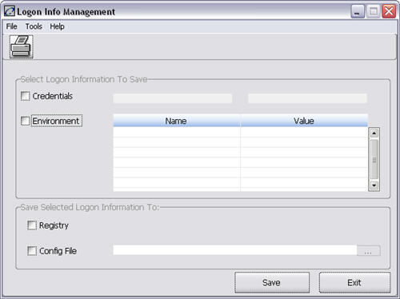
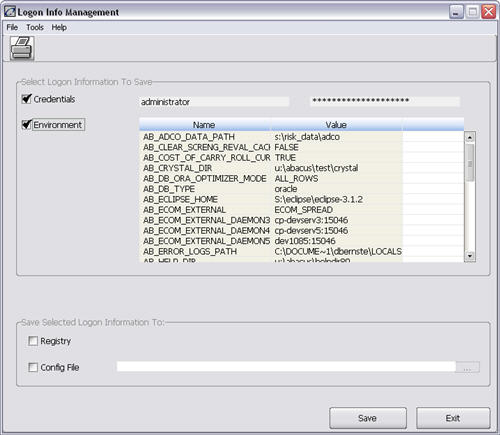

This window contains the user credentials and system external variables that were used to start the current session of the OpenLink application. This window is used to export these credentials or variables to a configuration file or Windows registry. The variables shown may come from a runscript, registry file, configuration (config.) file or command line; database variables set in the System Wide Configuration window are not included in this screen.
Logon Info Management contains the Logon Information to Save and the Save Selected Logon Information To panels. The Logon Information to Save panel displays the user logon credentials and environment variables while the Save Selected Logon Information To designates if this data is saved to either a registry file, configuration file or both.
The following reference document can be found in the CRM Web Portal.
Installation_Administration_Guide.pdf
Accessing This Window/Screen
To access this window:
1. Start OpenLink Central.
2. Select Launch Available Services from the menu.
3. In the search panel, enter the service name “Logon Info Management”.
4. Select the appropriate service from the Available Services panel and click “OK”.
The following window displays:

The image below depicts the window after selecting the “Credentials” and “Environment” check boxes.

This window contains the following menu items:
|
Menu |
Item |
Description |
|
File |
|
Prints the current screen. |
|
|
Save |
Saves the screen selections, “Credentials” and/or “Environment” to the designated “Registry” or “Config File” designated in the Save Selected Logon Information To. |
|
|
Exit |
Closes the window. |
|
Tools |
Clear Registry Credentials |
Removes the saved credentials (user name and password in encrypted form) from the Windows registry. |
|
|
Clear Registry Environment |
Removes the saved environment variable names and values from the Windows registry. |
|
Help |
Help |
Displays the system help files. |
This window contains the following buttons:
|
Button |
Description |
|
|
Has the same function as FileàPrint Screen. |
|
|
Has the same function as FileàSave. |
|
|
Has the same function as FileàExit. |
|
|
Launches a dialog box for choosing a file or folder. |
This panel is used to specify the information to export.
This panel contains the following fields:
|
Field |
Description |
|
Credentials |
Select this check box to export the user name and password of the logged in user. This information will be encrypted and the resulting string will be saved as the value for AB_LOGON_CREDENTIALS. |
|
Environment |
Select this check box to export the external environment variables currently set in the running session. The variables are displayed in a table containing the variable name and the corresponding value. |
To modify the table configuration, right-click any column header. The Column Header Menu displays.
This panel is used to designate where the environment variables will be saved.
This panel contains the following fields:
|
Field |
Description |
|
Registry |
Select this check box to save the environment variables to the Windows Registry. Note: To use these saved values to start a new session, the database name, server name and user name must be set in a configuration file, runscript or command line to use the registry. |
|
Config File |
Select this check box to save the environment variables to a configuration file. This selection should be chosen when using UNIX operating systems. |